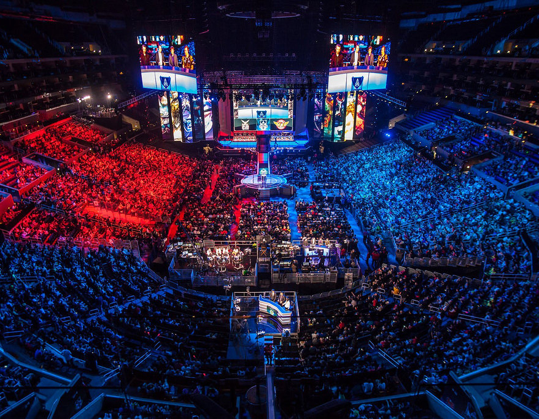

Overwatch Champion Series
Overwatch League Grand Finals: The Ultimate Showdown in Hero Shooter Esports

The Overwatch League was officially launched in 2018 by Blizzard Entertainment, making it one of the first geolocated, city-based franchised leagues in esports history. The inaugural Grand Finals were held at the Barclays Center in New York and set a precedent for blending traditional sports structure with competitive gaming. The Grand Finals are the season-capping championship event, featuring the best teams from the league after months of regular season play, tournaments, and playoffs.
The league has evolved through significant structural reforms. Early seasons (2018–2020) featured long regular seasons and end-of-year playoffs. Later iterations, particularly in 2021–2023, transitioned into tournament-style midseason events, point-based qualifications, and improved cross-regional play (West and East Divisions). The Grand Finals serve as the definitive contest to crown the world’s best Overwatch team. With the release of Overwatch 2 in October 2022, the league transitioned from a 6v6 format to 5v5, bringing with it new game modes and balance updates.
Organizer / Governing Body
The Overwatch League is organized and regulated by Blizzard Entertainment, the publisher of Overwatch and Overwatch 2. Blizzard oversees team operations, league format, sponsorships, and broadcasting.
Games Featured in the Tournament
The Grand Finals exclusively feature Overwatch (now Overwatch 2), a team-based hero shooter combining first-person action with objective-based gameplay and a diverse roster of playable heroes.
Tournament Format
The Overwatch League Grand Finals usually features between 4 and 8 teams, depending on the year’s format. Teams qualify through seasonal League Points earned via regional competitions and tournament results, with top seeds from the East and West Divisions advancing directly. Some teams also secure spots through Play-In tournaments, adding more competition to the postseason.
The Playoffs follow a double-elimination format, leading to a best-of-seven Grand Finals that crowns the champion. While the league separates teams by East and West during the regular season, the postseason bracket merges them for a global contest. All Grand Finals take place on LAN in large venues, featuring live audiences and a full broadcast setup, with earlier playoff matches played as best-of-five and maps spanning multiple game modes.
Prize Pool
The Grand Finals of the Overwatch League (OWL) contribute a significant portion of the league’s overall prize pool. For instance, the 2022 OWL prize pool was set at $3,000,000 USD, with the Grand Finals champion receiving $1,000,000 and the runner-up earning $500,000. The remaining prize funds were distributed among the semifinalists and quarterfinalists. The prize distribution for 2022, for example, saw the champion taking home $1,000,000, the second-place team earning $500,000, and the third and fourth-place teams receiving approximately $250,000 each. Teams finishing in the 5th to 8th places earned about $100,000 each. The prize pool is primarily funded by Blizzard, but it is supplemented by in-game purchases, including Overwatch League skins and team-branded content, contributing to the overall funding of the event.
Live Streams and Coverage
The Overwatch League (OWL) has been streamed across multiple platforms, with YouTube Gaming holding exclusive streaming rights from 2020 to 2022 through a partnership between Blizzard and Google. OWL broadcasts are available in a range of languages to cater to a global audience. Regional casters and analysts are employed to ensure cultural relevance and accessibility, allowing fans from different regions to enjoy the tournament in their preferred language.
Streaming Platforms
- Twitch
- YouTube Gaming
- Overwatch League Website
- X (formerly Twitter).
- TikTok
Languages and Regions
- English
- Korean
- Mandarin, Chinese
- French
- And more, tailored to various regional audiences
Venue and Production
The production of the Overwatch League Grand Finals is top-tier, known for its eye-catching visuals, including expansive stage designs and cutting-edge lighting. The use of interactive fan elements, combined with team storylines and player profiles, offers a compelling narrative that brings viewers closer to the action. The result is a broadcast that not only celebrates the skill of the players but also provides an immersive experience for both esports enthusiasts and newcomers.

Global Stage
The Overwatch League Grand Finals has been held in prominent venues across the globe, including cities like Philadelphia, USA, and Los Angeles, USA, as well as in smaller cities like Paris, France. These locations were chosen for their vibrant gaming communities and modern infrastructure, ensuring an unforgettable live experience for fans. The event’s global appeal is heightened by its diverse settings, contributing to the Overwatch League’s growing international footprint.